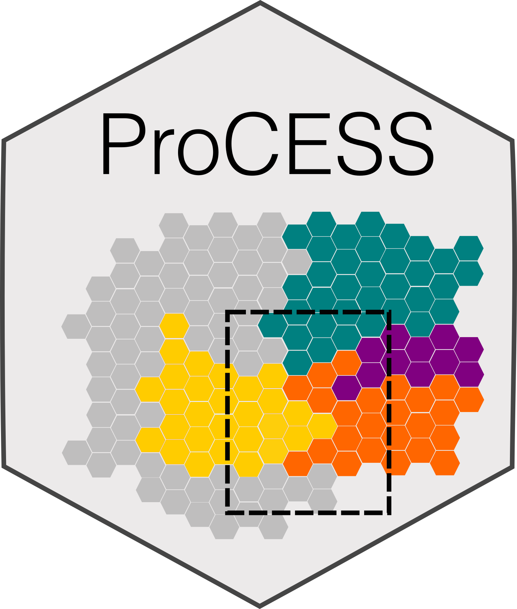

Retrieving the rates update history
Source:R/RcppExports.R
TissueSimulation-cash-get_rates_update_history.RdThis method retrieves the simulation rates update history.
Value
A data frame containing the event rates updates. The data frame
contains the columns time, mutant, epistate, event,
and rate. Each row reports an update in the rate of an event
in a species.
Examples
# set the seed of the random number generator
set.seed(0)
# create a simulation
sim <- TissueSimulation()
sim$add_mutant(name = "A",
epigenetic_rates = c("+-" = 0.01, "-+" = 0.01),
growth_rates = c("+" = 0.2, "-" = 0.08),
death_rates = c("+" = 0.1, "-" = 0.01))
sim$place_cell("A+", 500, 500)
sim$death_activation_level <- 100
sim$run_up_to_size(species = "A-", num_of_cells = 5000)
#>
[████████████████████████████████████████] 100% [00m:00s] Saving snapshot
# Set the death and epigenetic switch rates of "A-" to 0
sim$update_rates("A-", c(switch=0, death=0))
sim$run_up_to_size(species = "A+", num_of_cells = 5000)
#>
[████████████████████████████████████████] 100% [00m:00s] Saving snapshot
# Set the death rate of "A+" to 0.5
sim$update_rates("A+", c(death=0.5))
sim$run_up_to_time(sim$get_clock()+1)
#>
[████████████████████████████████████████] 100% [00m:00s] Saving snapshot
# get the rates update history
sim$get_rates_update_history()
#> time mutant epistate event rate
#> 1 0.0000 A - death 0.01
#> 2 0.0000 A - growth 0.08
#> 3 0.0000 A + death 0.10
#> 4 0.0000 A + growth 0.20
#> 5 171.4485 A - death 0.00
#> 6 171.4485 A - switch 0.00
#> 7 274.0157 A + death 0.50